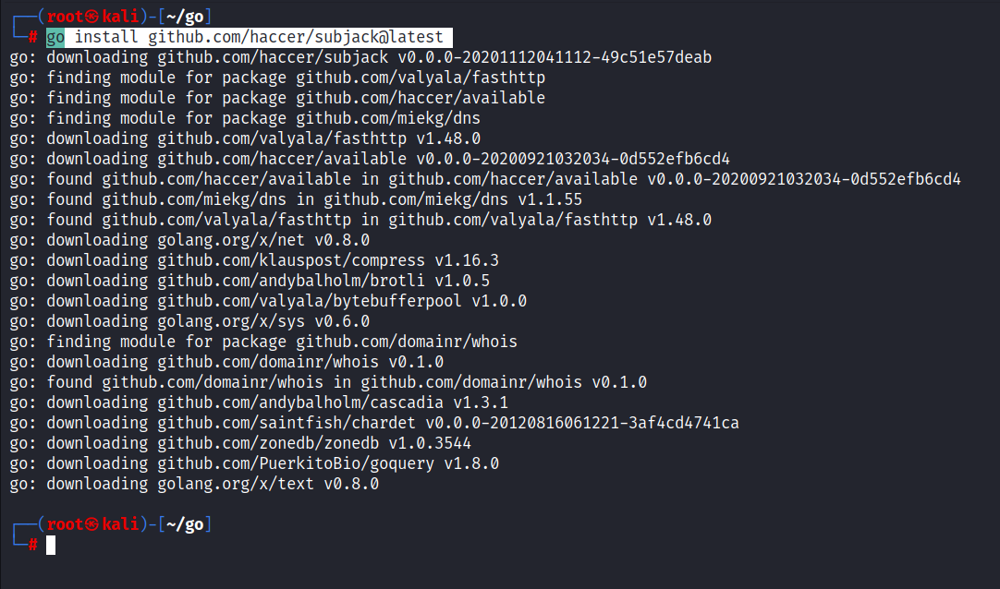

Resources for this video:
sumrecon: https://github.com/thatonetester/sumrecon
TCM's modified script - https://pastebin.com/MhE6zXVt
Will look into something called as possible sub domain takeover attack:
meaning this subdomains are purchased but sometimes that the records are wrong or the sub-domain is lapsed in payment or something.
We have to install this things in order to run the script correctly.
Certspotter:
go install software.sslmate.com/src/certspotter/cmd/certspotter@latest
Waybackurls:
go install github.com/tomnomnom/waybackurls@latest
Eyewitness:
git clone https://github.com/RedSiege/EyeWitness.git
cd Eyewitness
cd Python
cd Setup
./setup.sh
Subjack
go install github.com/haccer/subjack@latest

sudo su
wget https://github.com/tomnomnom/waybackurls/releases/download/v0.1.0/waybackurls-linux-amd64-0.1.0.tgz -O /tmp/waybackurls-linux-amd64-0.1.0.tgz
cd /tmp
tar xvfz waybackurls-linux-amd64-0.1.0.tgz
cp /tmp/waybackurls /usr/bin
chmod +x /usr/bin/waybackurls